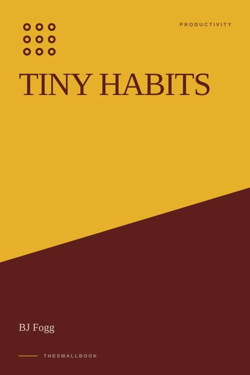
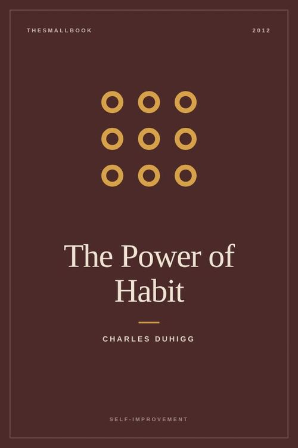

Library › Ask the Library › How do I build habits that actually stick?
How do I build habits that actually stick?
The short answer
Habits stick when you shrink the start, attach them to an existing anchor, and make the reward immediate. Identity beats willpower: every rep is a vote for who you are becoming. Never miss twice, one miss is an accident, two is a new habit.
The books behind the answer

Atomic Habits
James Clear · 2018 · 11 min · 8 lessons
Getting 1% better every day compounds into a completely different life. Habits are the compound interest of self-improvement.
- The Power of 1%, Habits Compound: 1% better daily compounds into 37x in a year, the system, not the goal, is the engine.

Tiny Habits
BJ Fogg · 2019 · 8 min · 6 lessons
Habits don't need motivation - they need design. Start tiny, anchor it, celebrate - and watch it grow.
- Start Absurdly Small: Shrink the habit until it takes under 2 minutes, momentum does the rest.

The Power of Habit
Charles Duhigg · 2012 · 8 min · 6 lessons
You can't extinguish a bad habit - you can only change it: keep the cue and reward, swap the routine.
- The Habit Loop: Cue → craving → response → reward: redesign the loop, don't fight it.
Questions people ask next
Can I read this in Hindi?
Yes. This answer is written in simple English. Open any linked book and choose Hindi or Hinglish to read the full lessons in your language, with audio where available.